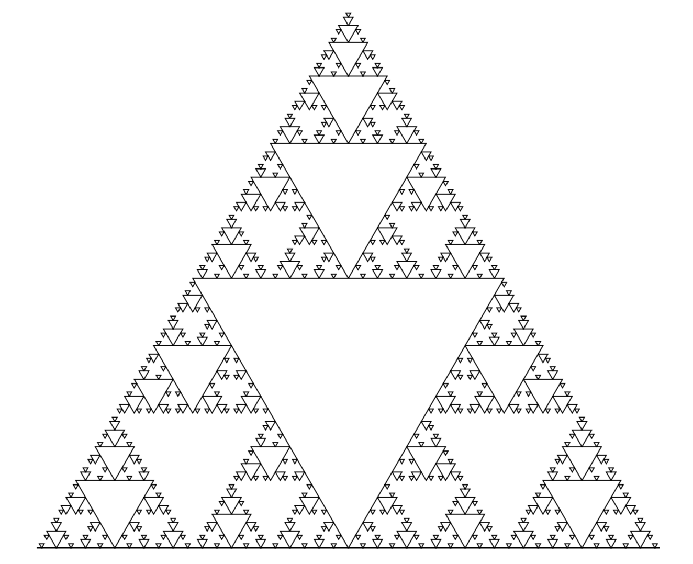

Fractals are self similar structures obtained by a recursive function repeated
indefinetly. Rescaling a portion of a fractals show the fractal itself.
Fractals are often found in nature and are thoroughly
studied in mathematics.
Let's show an example of fractal to clarify. The koch snowflake can be
obtained by dividing a line in 3 equal segments and replacing the middle
one with an equilateral triangle, with side 1/3 of the line, and removing
the lower side of the triangle.
This process can then be reused on all segments obtained from the last
iteration an indefinite number of times. The following image shows the
first 5 iteration of Koch's snowflake.
It should now be fairly clear what a fractal is.
How to make fractals.
Brief introduction to fractals
Fractals in Latex
To make a fractal in Latex the tikz package is needed and the
lindenmayersystems library must also be used.
We first need to define such a curve (inside the document).
Now that the function is defined we can make the fractal. In this step is also necessary to define the lenght of a step, the angle, the order (the iteration that has to be depicted) and an axiom.
To clarify let's make a couple of example. In the first one I will set the axiom to F++F++F, this will make our starting figure an equilateral rectangle instead of a line, and the fractal will be developed internally. If instead of F++F++F the axiom F--F--F is used the fractal will
still be applied to a triangle but it will be developed externally.
If instead of F++F++F the axiom F--F--F is used the fractal will
still be applied to a triangle but it will be developed externally.
CODE
Let's now analyze the steps necessary to recreate a Koch'curve in
Latex.
\usepackage{tikz}
\usetikzlibrary{lindenmayersystems}
We first need to define such a curve (inside the document).
CODE
F means that we must take a step forward, + indicates to turn couterclockwise
by a certain angle, that will be defined briefly, and - indicates that
we need to turn by the same angle clockwise.
\pgfdeclarelindenmayersystem{Koch}
{\rule {F -> F+F--F+F}}
Now that the function is defined we can make the fractal. In this step is also necessary to define the lenght of a step, the angle, the order (the iteration that has to be depicted) and an axiom.
CODE
And as expected this gives us.
At this point it should be clear how angle, step, and order work,
but axiom is most likely not clear yet. If only F is used as an axiom then
the iteration will occur on a single line, if more than one is used
the fractal will be applied on multiples lines.
\begin{tikzpicture}
\draw
[l-system={Koch curve, step=2pt, angle=60, axiom=F, order=4}]
lindenmayer system;
\end{tikzpicture}
To clarify let's make a couple of example. In the first one I will set the axiom to F++F++F, this will make our starting figure an equilateral rectangle instead of a line, and the fractal will be developed internally.
CODE
\begin{tikzpicture}
\draw
[l-system={Koch curve, step=2pt, angle=60, axiom=F++F++F, order=4}]
lindenmayer system;
\end{tikzpicture}
If instead of F++F++F the axiom F--F--F is used the fractal will
still be applied to a triangle but it will be developed externally.
CODE
If axiom is still not clear as a concept I would advice the reader to
play around with it in Latex.
\begin{tikzpicture}
\draw
[l-system={Koch curve, step=2pt, angle=60, axiom=F--F--F, order=4}]
lindenmayer system;
\end{tikzpicture}
Some examples of fractals
A couple example of fractals, and the code to make them, will now be shown.
Let's start with one of my favourites, Sierpinki's triangle, at the eight iteration.
Let's start with one of my favourites, Sierpinki's triangle, at the eight iteration.
CODE

The other fractal that will be shown is the Hilbert's curve, at the fifth
iteration, and just for fun, let's color it blue.
\pgfdeclarelindenmayersystem{Sierpinski triangle}{
\rule{F -> G-F-G}
\rule{G -> F+G+F}}
\begin{tikzpicture}
\draw
[l-system={Sierpinski triangle, step=2pt, angle=60, axiom=F, order=6}]
lindenmayer system -- cycle;
\end{tikzpicture}
CODE
\pgfdeclarelindenmayersystem{Hilbert curve}{
\rule{L -> +RF-LFL-FR+}
\rule{R -> -LF+RFR+FL-}}
\begin{tikzpicture}
\draw [bottom color=blue, top color=blue]
[l-system={Hilbert curve, axiom=L, order=5, step=8pt, angle=90}]
lindenmayer system;
\end{tikzpicture}
To test if all these new concepts have been understood I would invite the
reader to try and replicate the following fractal. Hint, it is fairly
similar to Koch's snowflake.
And if you hate yourself you can also try to reproduce the
Mandelbrot set in Latex.
\pgfdeclarelindenmayersystem{fractal}{
\rule{F -> F+F-F-F+F }}
\begin{tikzpicture}
\draw
[l-system={fractal, step=2pt, angle=90, axiom=F, order=4}]
lindenmayer system;
\end{tikzpicture}